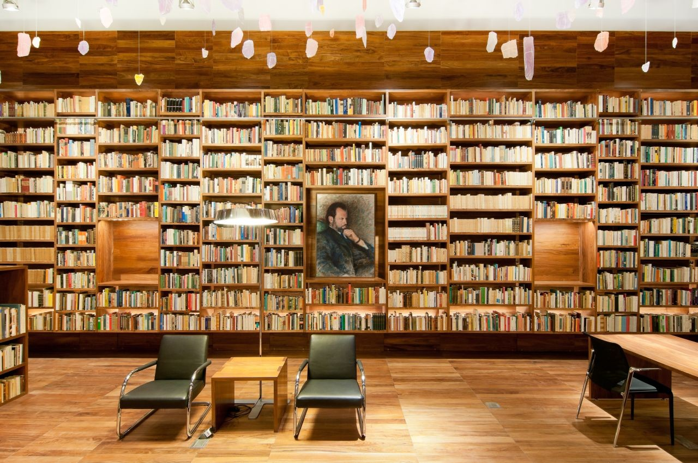
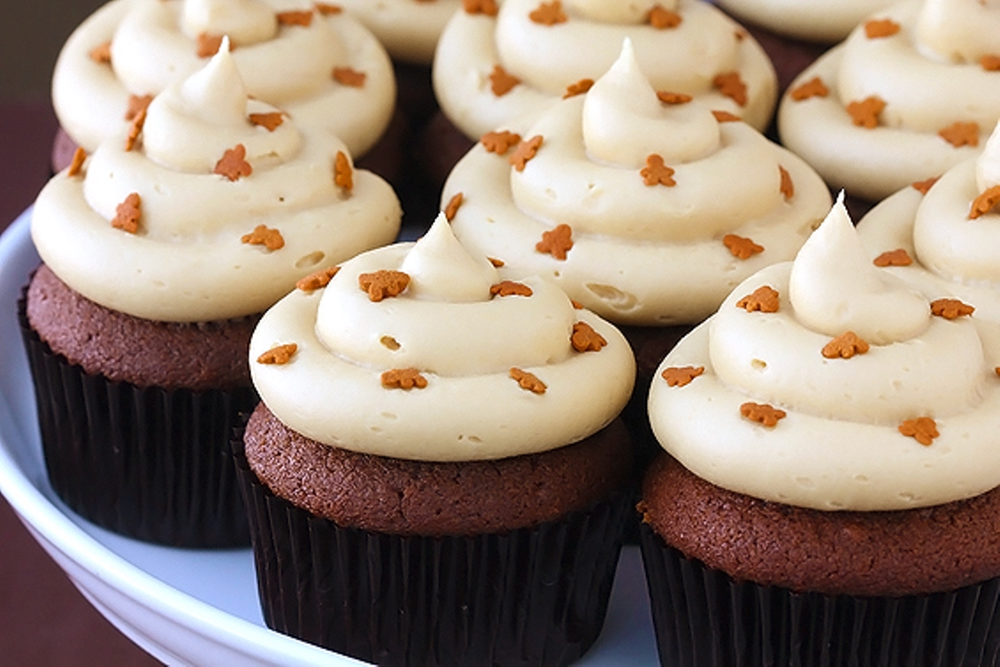

Arianna Chau Welcome to my first online portfolio.
About
Hello! My name is Arianna, and this is my first online portfolio. I hope you can get a little bit of an idea of what I'm about from my site. I have a broad specretum of interests, I particularly love:
- Hiking
- Video games
- Crocheting
I don't have as much schooling as I'd like, I graduated from David Douglas high school in 2013 and I've dabbled in some college courses a few times just trying to find my calling. I would pursue a lot of different options and nothing ever really stuck with me, then, one night I was cruising around the internet and I came across coding school and it instantly peaked my interest, as a huge career path I would love to take is game design. I did a lot of research and I came to the conclusion that this was something I had to try. So far, I'm so glad I did. It's a very rewarding field and I feel like I've learned so much in my few short weeks of school and I can't wait to see what the future holds for me.
Projects:
- This is a recreation of the Wikipedia homepage. This is where everything we learned so far had been put to the test. Although we weren't able to finish, with a combination of HTML, CSS and Bootstrap, we were well on our way to the recreation.
 This is for some reason one of my favorite projects so far. It's a site for an animal shelter that displays the sweet pets that need homes. We used HTML and CSS per usual but this was also our first major practice site using Bootstrap using columns, rows, padding and borders. It was a lot of fun playing with the different colors, layout and format of the page as it came together.
This is for some reason one of my favorite projects so far. It's a site for an animal shelter that displays the sweet pets that need homes. We used HTML and CSS per usual but this was also our first major practice site using Bootstrap using columns, rows, padding and borders. It was a lot of fun playing with the different colors, layout and format of the page as it came together.
- My cupcake site is by far the most extensive for what I had learned at the time of making it. I had only learned about HTML and CSS and I was very proud of myself and how it looked for being almost completely inexperienced. I love this one because I love cupcakes! It was so fun being able to pick the perfect pictures, what colors when best and just feeling the most complete for what I knew.
 This is one of my very first projects, using only HTML. It's about my dog, Zelda. It's not much but I remember at the time I was very excited about how it looked. I look back and laugh at it now and it's exciting for me to think about how one day I'll be looking back at this portfolio and say to myself. "Wow, that's nothing compared to what I can do now!"
This is one of my very first projects, using only HTML. It's about my dog, Zelda. It's not much but I remember at the time I was very excited about how it looked. I look back and laugh at it now and it's exciting for me to think about how one day I'll be looking back at this portfolio and say to myself. "Wow, that's nothing compared to what I can do now!"